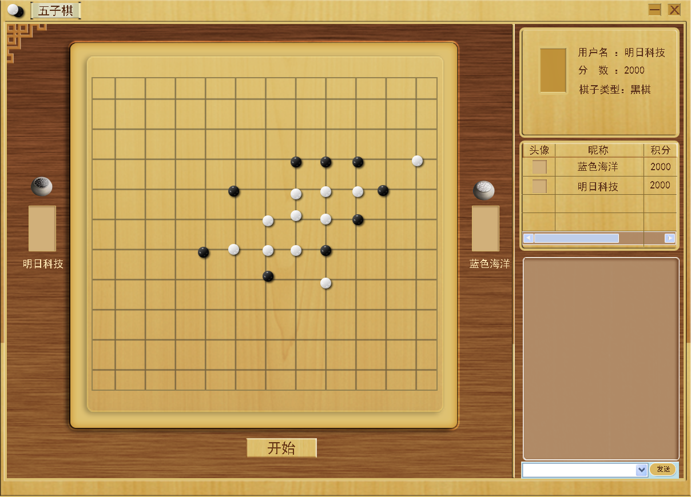

酒逢知己千杯少，棋逢对手古来稀。所以，棋说世界就是展示你棋艺的绝佳平台。在这里，无需等待，你就可以与棋友尽情切磋。棋说世界是一款休闲类的棋牌游戏。棋牌种类繁多，包括简单易上手的五子棋，一失足成千古恨的象棋等等多种棋牌类型。
当玩家选择了棋牌类型以后，即可进入游戏大厅，在游戏大厅中静等3秒，即可进入游戏登录界面。游戏大厅风格选用古式简约大方。之所以选择古式简约风，是因为棋牌类本就源于古代。
玩家初次登录棋说世界时，需要设置相关信息，包括用户名、密码以及头像等等信息。下次玩游戏时通过账号和密码登录游戏即可
玩家玩游戏前，需要先进入房间，而玩家房间是根据玩家选择的游戏模式而创建的，其中人机匹配和随机对弈是系统自动创建的房间，而好友对战则通过双方其中一方创建房间，然后在邀请另一方，待另一方同意进入房间后，方可开始游戏。
棋手对弈模块，主要分为三种对弈模式，分别是人机匹配、好友对战和随机对弈。人机匹配和随机对弈是根据玩家的当前水平（初级、中级、高级）匹配同等级的对手相互对弈。
